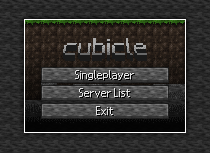

TIMELINE
1. THE BEGINNING OF CUBE0
CUBE0 was started out using the name "cubicle", there was a name before that but there are no traces of it.
I have created the textures for it when creating cubicle along side it, and I am still using it 'till this day.
Here's a sketch photo for the title screen (with added bordering).

As you can see, I was "inspired" from the beta versions of Minecraft.
2. THE START OF CUBE0
I started out using TurboWarp (a modified Scratch client) and the 3D extension. I have done this before, but only building and breaking blocks. There was really no survival, inventory or even terrain generation.
I have coded the player movement on that project so, I stole my own code for this game and bam, it works!
As I stated earlier that I have already did the textures, so all i did is put a huge cube underneath me to test out the movement
Then, I've started coding the raycast (think of a laser, the red beam stops when it is touching something) so that I could place down blocks or break blocks.
3. THE EARLY STAGES OF CUBE0
I was getting bored of placing the land myself all day, so I've figured why not use Perlin noise to make the computer place the land for me? Something that I couldn't figure out on the last project.
Took about under a day to have an example running, and wouldn't you know it I now have an 8x8 chunk! Only the grass block, no dirt, no stone, neither trees. I was just happy to finally figure this out.
I posted a video showing out the movement, and the state of the game on a Discord server with other people who use TurboWarp, and remembered that there was another person who made a slow, but sucessful chunk loading system.
He was impressed on how I managed to make the arms, since nobody, even I when making the earlier project could not figure out how to do it.
I showed him the code for the arms, and I asked on how he did the project, in which he shared the project file. It was messy, but I did some clearing out and ported it over to my project.
Later on, I've added water, sand, stone, gravel, messed around with the world size generation and the render distance, created UI for the game similar to the photo I have shown with cubicle.
4. THE ALPHA STAGES OF CUBE0